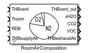
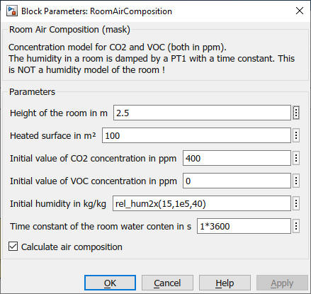

RoomAirComposition
Path: CARNOT/Basic/Thermal_Models
Purpose
Model for the
concentration of CO2 and VOC in the room air. Additionally the humidity in the
room is damped by a transfer function (NO full humidity model).
Description
Concentration of gases (CO2 and VOC) are calculated by
the differential equations used
to model mixing or dilution problems.
If y is the quantity of a gas in a room, then its rate of change with respect to
time t will be given by
dy/dt = flow in − flow out
With
flow = concentration × velocity
and
concentration = quantity volume
We get
dy/dt = y_coming_in/volume × velocity_in − y_going out/volume × velocity out
For constant boundary conditions the equation can be solved analytically. As boundary conditions may vary, the model leaves this task to Simulink.
Remark: The calculation can be disabled by the check-box
"Calculate air composition".
Inputs
Outputs
Parameters and Dialog Box

Characteristics
Direct Feedthrough Yes
Sample time Inherited from driving block
Vectorized No